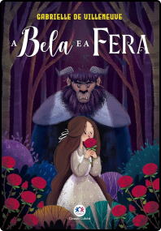

Autora: Gabrielle de Villeneuve
Idade Indicada: 6 - 15 anos
Idioma: Português Brasileiro
Número de Páginas: 112
Data de Publicação: 17 de Abril de 2020
Bela é a filha caçula de um comerciante que passa por dificuldades financeiras, até que uma
oportunidade aparece e ele parte em uma viagem a trabalho. Ao perguntar para as filhas o que
desejavam de presente quando retornasse, Bela é a única que pede algo singelo ao pai: uma rosa.
Durante a jornada o comerciante se abriga em um castelo e se depara com as rosas mais lindas que já
encontrara. Quando ele colhe uma flor, uma horrível fera aparece furiosa e reivindica uma das filhas do
comerciante como forma de reparar o roubo. Corajosamente, Bela se voluntaria e se torna prisioneira da
terrível Fera em seu lindo castelo.